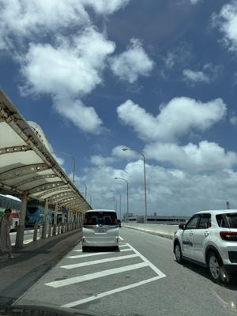

うるがいの話 ある日
最新: 納豆【うるがいの話 ある日】とは 一日だけのプログです
『うるがいの話』の最新一日だけのプログで、通信料が少なく経済的だ。カニの画像をクリックすると全ての日付が載る『うるがいの話』サイトを表示します
|
|
【うるがいの話】 うるがい(ｳﾙｶﾞｲ urugai)とは、『もずくがに』の名前でとても大きくなります。 |
|---|---|
|
|
【カミマヤーの話】 猫のことを方言でマヤーといいます。カミマヤー（kamimayaa）とは、神の猫のことです。 |
|
【たながぁの音楽】 たながぁ（ﾀﾅｶﾞｰ tanagaa）とは手長えびのことで、何種類かあり大きいのは車 エビぐらいになります。 |

|
【ぶながぁの話】 ぶながぁ(ﾌﾞﾅｶﾞｰ bunagaa)とは、赤い髪の毛、赤い身体、そして身長は１ｍ２０ｃｍ ぐらい、川の蟹を食べているの目撃された。場所は沖縄県国頭郡大宜味村のと ある村僕の隣近所に住んでいる爺さんから、聞いた話です。 |
|
|
【ギーマの話】 ギーマ(giima)とは、山原の里山に咲くスズランに似た、 花を付けます。実は食べられます、 気が付くと口の周りが紫になっています。 |
2026年07月09日 (木）納豆
15:38
琉球新報の記事より
私は納豆が大好きだ。週に１度は食べている。納豆は栄養価が高
いが 低カロリーと、体にも家計にも優しく、日本が誇日本が誇
れる健康食品の優等生だ。この納豆がここ数年食料品の値上げと
共に少しずつ値上がりした。私の好みは本土メーカー品で県産よ
り１００円くらい高かった。神戸に毎月行くが、家の近くのスー
パーでこの納豆が８８円で販売されているのを知った。それ以来
、納豆を２、３個買い、保存袋に入れて沖縄へ持ち帰るようにな
った。
ん？、私は毎日納豆を食べています。本土での寮生活で朝食に必
ず、納豆がありました。でも、臭いがダメで食べませんでした。
子供達が小さい頃、食べるので試しにと、たれをつけて食べたら
食べられました。今でも、タレがないとダメです。最近は、子供
を真似てワサビを入れて食べています。それにしれも、投稿にあ
るように以前は百円を、切っていたのに。
これからを生きるあなたに伝えたいこと、
瀬戸内 寂聴∥著美輪 明宏∥著 マガジンハウス2016/04 より
瀬戸内 今ね、だんだんと日本は前の戦時中に似てきているんで
すよ。
瀬戸内 だから、このまんまいったらね、「あの作家には書かす
な」とかね、この作家には「こういうものを書け」とか
ね、そういう世の中になると思いますよ。だから私は本
当に怖いと思います。
美輪 もうなりかけているじゃありませんか。だって、自民党
の若手の勉強会で沖縄の新聞社は二つとも潰したほうが
いいとか。戦時中と同じことを言い始めていると思いま
したよ。
瀬戸内 そう。怖いです。
コドモの代行で、図書館から予約した本を取りに行ったら、受付
で、美輪さんの本が羅列されていたので借りて読みました。

一時前にコドモを那覇空港で降ろしました。道は、珍しく空いて
ました。昨日の夜、窓の障子が鼓動するので鍵を閉め窓を固定し
ました。クラーも、ポコポコ音がするので、エアコン用消音防虫
弁おとめちゃんを昼過ぎセットしました。